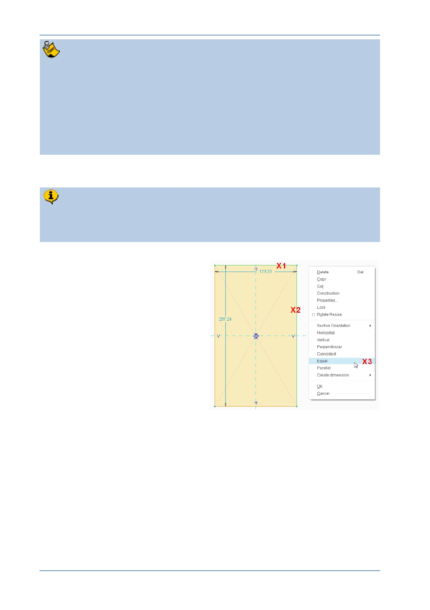

PTC Academic Program
Sketches are controlled by two types of parametric constraints.
Dimension constraints allow you to alter sizes. Later you will use dimensions
to define the size of this rectangle.
Geometric constraints including; equal length, parallelism, perpendicular,
coincident, and so on. Creo has already applied many of these while you were
sketching the square; to keep lines vertical/horizontal and make lines pass
through the origin. Next, to change this rectangle to a square, you will apply an
equal length constraint.
3. Adding an “Equal Length” sketcher constraint:
You will add an Equal Length geometric constraint between two adjacent sides of
the rectangle to make it a square. Creo Parametric is smart enough to remove
one of the blue-gray (weak) dimensions to avoid over constraining the sketch.
Click X1 to select the top
horizontal line in the rectangle.
The line should change color to
green to show it is selected.
Press and hold CTRL on the
keyboard, then click X2 to add
the vertical line to the selection.
This line will also change color
to green .
With both lines selected, right-
click and select Equal from the
pop-up menu (shown as X3) .
Notice that one of the blue- gray “weak” dimensions has disappeared and a pair of L1
(Equal Length) constraints have appeared next to the selected lines.
© 2012 PTC
Creo Parametric 2.0 Primer
Page 17